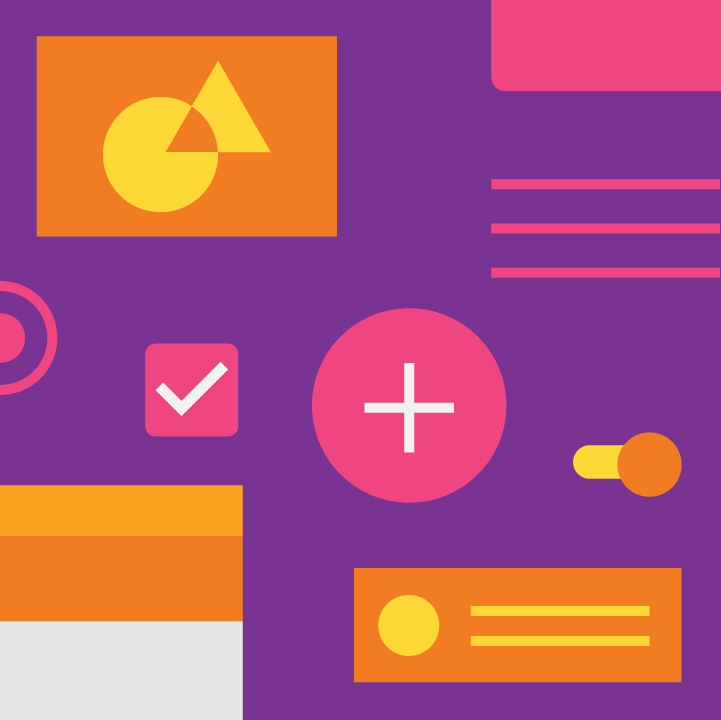
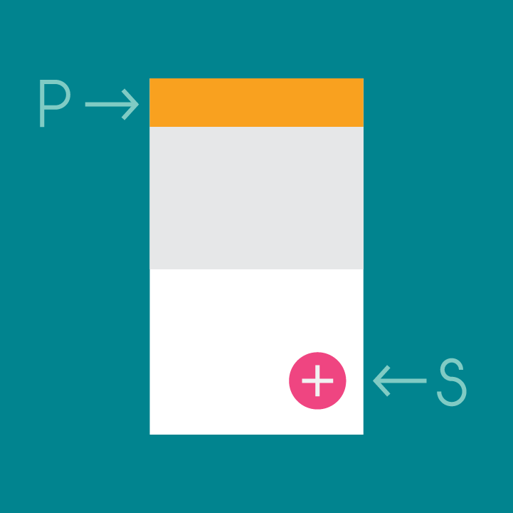

颜色工具
颜色工具可以帮你创建、分享配色方案、以及把配色方案应用到 UI 中，以及测试颜色组合的可访问性。

创建配色方案
创建配色方案，包含主色和辅助色的较深和较浅的变化。

预览 UI 的颜色
通过一系列的 Material Design 组件，来预览配色方案的效果，并可以在 Codepen 中编辑 HTML、CSS 和 JavaScript。
颜色工具可以帮你创建、分享配色方案、以及把配色方案应用到 UI 中，以及测试颜色组合的可访问性。
创建配色方案，包含主色和辅助色的较深和较浅的变化。
通过一系列的 Material Design 组件，来预览配色方案的效果，并可以在 Codepen 中编辑 HTML、CSS 和 JavaScript。
该调色板包含了主色和强调色，可以用于插图或开发你的品牌色。这些经过设计的颜色可以灵活的搭配。调色板从主色开始，通过填充光谱为 Android、Web、iOS 创建了完整可用的调色板。Google 建议使用 500 色号的颜色作为主色，其他颜色作为强调色。
主题通过设置表面阴影、阴影深度和墨迹不透明度来构建统一的应用样式。
你可以自定义应用的调色板，以适配你的品牌颜色。或者，你可以使用 Material Design 的调色板创建一个全新的配色方案。
创建配色方案时：
在 Material Design 中保持品牌化的分步指导
在 Material Design 中，主色应该是应用中出现最频繁的颜色，辅助色则是用来强调 UI 中关键部分的颜色。
使用 Material Design 调色板中的颜色是可选的。

该配色方案中有一个主色，以及颜色较深和较浅版本的主色，和一个辅助色。
在使用主色的区域下方，相关信息使用了颜色更浅的主色进行着色。浮动操作按钮使用辅助色进行强调。
此配色方案包含主色，和颜色较深和较浅版本的主色。
主色应用于工具栏和状态栏，同时也被用于强调浮动操作按钮。
主色是应用中出现最频繁的颜色。如果没有使用辅助色的话，也可以用主色来强调元素。
要在元素之间创造对比度，可以使用较浅或较深色调的主色。较浅和较深的色调之间的对比度有助于区分不同的表面，例如区分状态栏和工具栏。
此配色方案包含不同色调的主色，因为需要用到较浅和较深色调之间的对比度。
辅助色用于强调 UI 中的选择部分。辅助色可以是和主色互补的，也可以是和主色类似的，但它不应该只是简单的对主色进行加深或变浅。辅助色应该和它周围的元素形成对比，并作为强调，且应谨慎使用。
辅助色最适合用于：
使用辅助色是可选的。如果你使用了主色的变体来强调元素，则不需要辅助色。
具有不同色调的辅助色配色方案。
辅助色配色方案不需要有多种颜色。它只需要和周围的元素形成对比，且应在 UI 中谨慎使用。
大型 UI 区域和元素应该使用主色进行着色。辅助色可用于强调较小的区域。如果没有辅助色，则可以在这些区域中使用主色。

浮动操作按钮使用辅助色进行强调，但是电话图标使用了主色。

开关使用辅助色进行强调。系统栏使用主色，而工具栏使用了较浅的主色。
使用主色来强调元素，例如按钮和复选框。
罕见的元素（如警告）应该和其他元素有明显的区分，不能使用主色。
使用主色作为强调，来表明按钮和复选框已被选中。
辅助色可以用在有代表性的元素上，例如按钮和链接。
辅助色，以及其他的用于强调 UI 中某部分的颜色，应该谨慎使用。
正确示例
对某些文本使用强调色，例如链接文本。
错误示例
不要在正文中使用明亮的颜色，即使你的主色或辅助色是明亮的。
有关颜色的更多排版易读性的指南，请参阅颜色工具。
正确示例
你可以使用主色来强调链接。
正确示例
使用主色或强调色来强调较短的文本，如标题。
正确示例
在主要操作按钮上使用辅助色。
错误示例
不要在应用栏、较大的色块区域上使用辅助色。如果浮动操作按钮位于辅助色背景上，则不要在浮动操作按钮上使用辅助色。
正确示例
使用单色作为强调色，使图像和其他彩色的元素更加突出。
正确示例
在主色区域上的元素，可以使用不同色调的主色（例如这个浮动操作按钮）。
正确示例
文本框和开关可以使用辅助色作为强调。
正确示例
文本选择可以使用辅助色作为强调。
替代辅助色
如果你的辅助色太浅或太深，不足以与背景色形成充分对比，请使用较浅或较深的辅助色代替。

正确示例
在很深或很浅的背景色中，使用不同色调的辅助色。

错误示例
如果主色和辅助色没有足够的对比度，不要在主色背景上使用辅助色。
层次结构是指根据重要性级别来组织内容。颜色可以表达出一些内容相对与其他内容的重要性。
例如，无色背景上的亮色按钮，会使该按钮更突出。或者，无色的应用栏和按钮使 UI 中明亮的内容更突出。

大胆的颜色强调了浮动操作按钮和工具栏，使信息的创建和导航更突出。
无色的应用栏和按钮使亮色的内容更突出，不强调状态栏和导航栏。
颜色可以用来表达屏幕中不同元素的含义。天气应用可能会使用表示当前天气状况的颜色，地图应用可能会用红色或绿色的道路颜色，来表示交通状况。
天气应用使用颜色来表示一天中的时间。
地图应用使用颜色来表示交通状况。
颜色可以提供以下信息：
表示状态变化的颜色应该是明显的，因为只有细微差异的颜色可能会被用户忽视。最好能以多种方式来表示状态的变化，例如显示一个图标、或移动元素的位置。
红色的标签和帮助文本表示错误信息。
颜色从蓝色变为红色，以表示不同的状态。
在这个 UI 中，红色表示一天中的时间，绿色表示有雾的天气。
这是红绿色盲看到的左侧的 UI。它们可能无法看到文本和其他元素之间的差异。
还应该使用除颜色以外的功能来传达信息。

较小的文字对于白内障用户可能会难以阅读，在他们眼中，你的 UI 可能会变得模糊。没有足够对比度的元素会被淹没在背景中。
为了适应所有用户，可以提供放大文本的选项。
文本应该在其背景中清晰可见。建议：
如果你的应用同时含有亮色和暗色主题，文本颜色应该要和每个主题都有足够的对比度。
彩色背景上的文本需要保证清晰可读，以符合无障碍标准。在背景色和文本色上同时使用不透明度，可以满足此标准。 AA 级的Web 内容无障碍指南（WCAG 2.0）要求普通文本的对比度为 4.5:1，大文本的对比度为 3:1。
正确示例
使用不透明度，而不是改变颜色，通常能创造更好的对比度和相对亮度。例如，如果背景色变为洋红色，则其中的灰色文字（#727272）会变得难以阅读。
错误示例
转换为灰色，而不是降低了对比度的黑色，通常会降低相对亮度，使文本不可读。
文本的不透明度取决于背景色是深色还是浅色的。对于浅色背景中的深色文本，使用以下不透明度：

暗色文本（#000000） | 不透明度 |
主文本 | 87% |
辅助文本 | 54% |
禁用状态的文本、提示文本 | 38% |
分隔线 | 12% |
彩色背景上的白色文本应该使用 100% 的不透明度。

此表格显示了深色背景中的白色文本的相对重要性。
亮色文本（#FFFFFF） | 不透明度 |
主文本 | 100% |
辅助文本 | 70% |
禁用状态的文本、提示文本 | 50% |
分隔线 | 12% |
图标之类的元素使用具有 38% 不透明度的白色或黑色，以使它们能在任何颜色的背景上使用。
深色图标（#000000） | 不透明度 |
可用的图标 | 54% |
禁用的图标 | 38% |
亮色图标（#FFFFFF） | 不透明度 |
可用的图标 | 100% |
禁用的图标 | 50% |
正确示例
在重要的文本上使用有对比度的颜色（例如你的辅助色），使其与背景色产生对比。
错误示例
避免在彩色背景上放置大量彩色文本。
正确示例
你可以使用更深或更浅的色调来创建单色，也能突出外观。
错误示例
不要使用相同颜色的不同色调的颜色进行对比。与背景色对比度很低的文本会很难阅读。
主题可以让你的应用具有统一的风格。主题指定表面的暗度、阴影程度，以及墨水元素的适当的不透明度。为了提高不同应用之间的一致性，你可以选择亮色主题和暗色主题。
1. 状态栏
2. 应用栏
3. 背景
4. 卡片/对话框

亮色主题调色板

在 UI 中的应用
1. 状态栏
2. 应用栏
3. 背景
4. 卡片/对话框

暗色主题调色板
在 UI 中的应用
自定义你的品牌标识。